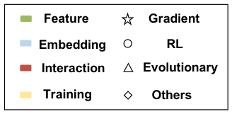

A Comprehensive Survey on Automated Machine Learning for Recommendations (面向推荐系统的自动化机器学习综述)
- 会议/期刊: ACM Transactions on Recommender Systems (TORS)；arXiv 预印本 2022-04
- 作者与机构: Bo Chen、Huifeng Guo、Ruiming Tang（华为诺亚方舟实验室）；Xiangyu Zhao、Yejing Wang（香港城市大学）；Wenqi Fan（香港理工大学）
- 推荐链路定位: 精排（CTR 模型架构与特征层自动化设计），可外延至粗排
- 研究方向: CTR/CVR 预估与特征交叉 / 多任务与列表级重排
- 论文原文: arXiv:2204.01390v2
- 开源代码: 暂未开源
TL;DR (1分钟核心速览)
深度推荐系统（DRS）长期依赖“特征嵌入 + 特征交叉”的人工架构设计，专家门槛高、工程成本大且易受人为偏见影响。本文是一篇系统性综述，首次以 DRS 的四大可自动化组件（特征选择 FS、特征嵌入 FES、特征交叉 FIS、模型训练 Training）为主线，对每个组件给出细粒度子分类并逐一对比其搜索空间量级与搜索算法；核心论点是 AutoML4Rec 正沿三条轴演进——单组件 → 多组件联合搜索、详细空间 → 抽象空间、RL/进化 → 梯度松弛主导。注意：本文不含一手基准实验，其贡献在于分类法与量化对比表（搜索空间从 \(2^{Vd}\)压缩至\(a^{m}\) 量级）。
Background & Motivation (背景与核心矛盾)
- 主流范式: 以“Feature Embedding & Feature Interaction”四层范式（输入层-嵌入层-交叉层-输出层）为骨架的 DRS，其嵌入维度、交叉算子、交叉阶数、损失函数全部由专家手工指定。
- 前人局限: ①手工设计需要同时精通深度学习与推荐业务，且不同场景（如 DeepFM 的内积 vs. CFM 的外积 vs. DCN 的 cross 层）需要重新设计组件，泛化性差；②参数绝大部分集中在嵌入表 \(\mathbf{E}\in\mathbb{R}^{V\times d}\)，而统一维度会造成高频特征欠参数化、低频特征过参数化。
- 核心洞察 (Key Insight): 组件自动化的真正瓶颈不是“搜索算法不够强”，而是搜索空间过大——\(p\)阶特征交叉的朴素空间为\(2^{\binom{m}{p}}\)，逐特征值嵌入搜索为\(2^{Vd}\)。因此近年工作的主轴是空间抽象化而非算法复杂化。
- 本文切入点: 以“搜索空间（单/多组件 × 抽象/详细） + 搜索策略 + 性能估计”三要素为坐标系，把上百篇工作放到同一张演进地图上，给出可比较的复杂度刻度。

Method (核心方法设计)
1. 整体框架 (Overall Architecture)
综述将 DRS 构建流程切为数据收集—特征工程—模型构建—训练—部署五个环节，并指出 AutoML 的介入点集中在中间的三个：特征工程被拆为特征生成/特征选择与特征嵌入，模型构建被映射为特征交叉搜索，训练环节被映射为损失函数与优化器搜索。每一类方法都统一用 DARTS 式双线性规划表述架构参数 \(\mathbf{A}\)与模型参数\(\mathbf{W}\) 的交替优化：
\(\min_{\mathbf{A}}\ \mathcal{L}_{val}(\mathbf{W}^{*}(\mathbf{A}),\mathbf{A})\quad \text{s.t.}\ \mathbf{W}^{*}(\mathbf{A})=\arg\min_{\mathbf{W}}\mathcal{L}_{train}(\mathbf{W},\mathbf{A})\)
这构成了综述贯穿全文的“元结构”：几乎所有被收录的梯度类方法都只是在该骨架上替换离散空间的松弛方式。
flowchart TD
A["原始特征 x（m 个 field）"] --> B["FS：选择/生成特征子集（AutoField / AutoCross）"]
B --> C["FES：逐 field/group/value 定制嵌入维度（AutoDim / SSEDS）"]
C --> D["FIS：搜索有效交叉与交叉算子（AutoFIS / AOANet）"]
D --> E["Training：损失与优化器搜索（AutoLoss）"]
E --> F["CTR 打分 ŷ"]2. 关键设计拆解 (Key Designs)
1) 特征选择的连续松弛：把“保留/丢弃”写成可微门控。 早期 RL 方案（FSTD、MARLFS）把 \(2^m\)子集空间当作 MDP，样本效率极低。AutoField 借用 DARTS 的并行节点图，为每个 field 分配一对概率\((\alpha_i^1,\alpha_i^0)\)：
\(\hat{\boldsymbol{e}}_i=\alpha_i^1\cdot\mathbf{1}\cdot\boldsymbol{e}_i+\alpha_i^0\cdot\mathbf{0}\cdot\boldsymbol{e}_i,\qquad \alpha_i^1+\alpha_i^0=1\)由于“丢弃”被写成乘\(\mathbf{0}\)，梯度可穿过\(\alpha\)回传，搜索阶段即可与模型联合训练，最终按\(\alpha_i^0\)排序裁剪。AdaFS 进一步把标量门控换成由样本\(\boldsymbol{e}_j\) 驱动的 Controller，实现样本级自适应（同一 field 对不同用户权重不同）。
2) 嵌入维度的四象限压缩：从 Full 到 Column&Row。 这是综述最有价值的分类贡献。Full 搜索（AMTL 的孪生掩码层、PEP 的 \(\mathbf{L}_0\)软阈值重参数化）粒度最细但空间为\(d^V\)或\(2^{Vd}\)；PEP 的关键算子是用可学习阈值\(s\) 替代人工剪枝阈值：
\(\hat{\mathbf{E}}=\mathrm{sign}(\mathbf{E})\,\mathrm{ReLU}\big(|\mathbf{E}|-\mathrm{sigmoid}(s)\big)\)该式把不可微的硬剪枝变成\(|\mathbf{E}|\)上的软收缩，\(s\)与模型参数联合反传。Row-based（SSEDS、AutoSrh）按频次/聚类把特征值分成\(b\)组，空间降到\(2^{bd}\)甚至\(2^{md}\)；SSEDS 用损失扰动近似显著性\(s_{i,j}=\Delta\mathcal{L}_{i,j}\approx\partial\mathcal{L}/\partial\alpha_{i,j}\)，把\(md\)次前向压缩为一次反向。Column&Row（AutoDim）进一步降到\(a^{m}\)，并用 Gumbel-Softmax 采样候选子维度：
\(p_{i,j}=\frac{\exp((\log\alpha_{i,j}+G_j)/\tau)}{\sum_{k=1}^{a}\exp((\log\alpha_{i,k}+G_k)/\tau)}\)3) 高维交叉搜索的降维三件套：门控、分组、低秩/图递归。 AutoFIS 给二阶交叉加重要性门控并插入 BN 层解耦幅度与重要性，使 GRDA 能产出稀疏\(\boldsymbol{\alpha}\)：\(\sum_{i<j}\alpha_{ij}\langle\boldsymbol{e}_i,\boldsymbol{e}_j\rangle\)。高阶场景下\(2^{\binom{m}{p}}\)爆炸，AutoGroup 用 Gumbel-Softmax 做特征分组压到\(2^{gm}\)；PROFIT 利用“低阶优先”性质把架构张量低秩分解：
\(\boldsymbol{\alpha}\approx\sum_{r=1}^{R}\boldsymbol{\beta}_r\circ\boldsymbol{\beta}_r\circ\cdots\circ\boldsymbol{\beta}_r\)将空间降到\(mR\)，并按阶递进搜索（搜\(p\)阶时冻结\(<p\) 阶参数）。FIVES 把特征视为图、用逐层邻接矩阵递归建模高阶交叉：
\(\mathbf{A}^{(p)}\triangleq(\mathbf{D}^{(p-1)})^{-1}\psi(\mathbf{A}^{(p-1)})\sigma(\mathbf{H}^{(p)}),\quad \mathbf{A}^{(0)}=\mathbf{I}\)从而把\(2^{\binom{m}{p}}\)压到\(2m^2\)，且层间依赖天然保持“低阶优先”。AOANet 则走“泛化算子”路线，把交叉统一写成 Projection–Interaction–Fusion 三段式\(\mathbf{Z}_{i,j}=(\boldsymbol{e}_i\otimes\boldsymbol{e}_j)\odot\mathbf{W}\)、\(P=\mathbf{h}^{\top}\sum_{i,j}\alpha_{i,j}\mathbf{Z}_{i,j}\)，避免枚举人工算子集合。
4) 训练目标与推理开销: 综述指出训练环节的自动化（AutoLoss、\(\lambda\)Opt、AutoFT）覆盖率远低于前三类；推理侧核心代价来自搜索阶段（双线性规划需 2 倍训练开销 + 验证集切分），而搜索完成后通常需重训练（retrain）一次以恢复精度，线上推理与人工设计模型同构、无额外延迟。
Experimental Setup & Evaluation Protocol (实验设置与评估协议)
重要声明：本文为综述，不含作者自建的基准实验、无统一数据集管线、无 Full-Ranking/Sampled Ranking 协议，亦无显著性检验。因此本节记录的是其跨论文对比所依据的多源评估口径，以及综述自身给出的量化对比表。
- 数据集与预处理: 被收录方法各自沿用 Criteo / Avazu / Frappe / MovieLens / Amazon 等公开 CTR 与 CF 数据集，过滤与划分各不相同（多数为按时间或随机比例切分），这是综述未能统一的关键短板。
| 组件 | 代表方法 | 搜索空间 | 搜索算法 | 是否真正省内存 |
|---|---|---|---|---|
| 嵌入(Full) | AMTL / PEP | \(d^{V}\)/\(2^{Vd}\) | 梯度 / 正则 | ✗ |
| 嵌入(Col) | AutoEmb / ESAPN | \(d^{V}\)/\(a^{V}\) | 梯度 / RL | ✗ |
| 嵌入(Row) | SSEDS / AutoSrh | \(2^{md}\)/\(2^{bd}\) | 梯度 | ✓ |
| 嵌入(Col&Row) | AutoDim / NIS / RULE | \(a^{m}\)/\(a^{b}\)/\(2^{ab}\) | 梯度 / RL / 进化 | ✓ |
| 嵌入(Comb) | ANT / AutoDis | \(2^{kV}\) | 梯度 | ✓ |
- 数据划分与防穿越: 综述未对所收录方法做统一防穿越审计，仅指出 DARTS 式方法必须依赖独立验证集做架构选择，实际工业落地中易与训练集时间窗重叠。
- 排名/预测评测协议: 以 CTR 场景的 AUC / LogLoss 为主，CF 场景用 HR@K / NDCG@K；无统一负采样比例约定。
Key Experimental Results (实验关键数据)
1. 主对比：特征交叉搜索的空间—算法对照（源自原文 Table 4）
| 方法 | 搜索类别 | 搜索空间 | 支持阶数 | 搜索算法 |
|---|---|---|---|---|
| AutoFIS | 交叉选择 | \(2^{\binom{m}{2}}\) | 二阶 | 梯度 |
| AutoGroup | 交叉选择 | \(\mathbf{2^{gm}}\) | 高阶 | 梯度(Gumbel) |
| PROFIT | 交叉选择 | \(\mathbf{mR}\) | 高阶 | 梯度(递进) |
| FIVES | 交叉选择 | \(2m^{2}\) | 高阶 | 梯度(GNN) |
| \(\mathbf{L_0}\)-SIGN | 交叉选择 | \(2m^{2}\) | 二阶 | 梯度 |
| BP-FIS | 交叉选择 | \(u\,2^{\binom{m}{2}}\) | 二阶 | 贝叶斯 |
| SIF | 算子搜索 | \(C_n^{c}\) | 二阶 | 梯度 |
| AutoFeature | 算子搜索 | \(c\,n^{n\binom{m}{p}}\) | 高阶 | 进化 |
| AOANet | 算子搜索 | $2^{ | \text{pairs} | }$ |
| AutoCTR | 模块搜索 | \(c^{\binom{n}{2}}\) | 高阶 | 进化 |
| AutoPI | 模块搜索 | \(c^{\binom{n}{2}}\) | 高阶 | 梯度 |
2. 消融式对比：抽象化带来的空间压缩倍率
| 抽象手段 | 代表 | 空间变化 | 压缩量级（\(m=100\) 量级示意） |
|---|---|---|---|
| 逐值 → 逐 field | PEP → SSEDS | \(2^{Vd}\rightarrow 2^{md}\) | 由\(V\)主导降为由\(m\) 主导 |
| 逐 field → 逐 group | SSEDS → AutoSrh | \(2^{md}\rightarrow 2^{bd}\) | \(b\ll m\) 时指数级下降 |
| 分组 + 子维度 | AutoGroup + AutoDim | \(2^{\binom{m}{2}}\rightarrow a^{m}\) | 组合爆炸→多项式 |
| 张量低秩分解 | PROFIT | \(2^{\binom{m}{p}}\rightarrow mR\) | 指数→线性 |
3. 关键实验发现 (Key Findings)
- 搜索空间抽象化而非算法升级才是效率主引擎：把 PEP 的 \(2^{Vd}\)替换为 AutoDim 的\(a^{m}\)（\(a\approx 6\)），在\(m\)为数十、\(V\) 为百万级时压缩超过十个数量级，这使得梯度类方法在推荐场景全面压过 RL 与进化算法。
- 梯度松弛占据绝对主导：综述统计的嵌入与交叉方法中约 12 项使用 DARTS 式双线性梯度优化，RL 仅在两类场景存活——离散性本质无法松弛（ESAPN 的流式决策、NIS 的块采样）与端侧硬内存预算（RULE）。
- “细粒度最优”在工程上常常不可兑现：逐特征值嵌入搜索（AMTL、PEP）虽理论上最优，但变长嵌入无法存入定宽嵌入表，实际内存节省为零；相反 Row-based / Col&Row（SSEDS、AutoDim）因组内等宽才真正减少显存占用——这是综述隐含的最强工程结论。
Highlights & Limitations (亮点、对比与审稿批判)
- 与代表作对比 (vs. Prior Work): 相比 Zheng 等 [128] 的 AutoML4Rec 综述，本文的增量是把“损失函数搜索/交叉函数搜索”从“其他组件”中解放出来，纳入 FS/FES/FIS/Training 四支细粒度分类，覆盖面更全；相比通用 NAS 综述 [19,109]，本文明确了推荐场景特有的搜索对象是嵌入表与交叉算子而非卷积单元。
- 可迁移亮点: ①PEP 的 \(\mathrm{sign}(\mathbf{E})\mathrm{ReLU}(|\mathbf{E}|-\mathrm{sigmoid}(s))\) 软阈值重参数化可直接迁移到任何需要稀疏化的嵌入表/专家网络；②Gumbel-Softmax 在离散架构选择上的稳定实现，可复用于多任务网络中 MMoE/PLE 的专家路由搜索。
- 审稿级局限批判: ①无统一基准与复现实验——所有精度结论均转述自原文，且各方法数据集/划分/负采样口径不一，跨方法性能排序不可信；②时效断层——稿件定稿于 2022 年初，完全缺失 LLM4Rec、生成式推荐（语义 ID / RQ-VAE）、DLRM 式大规模嵌入分片与 Mamba 序列建模等 2023 后主流方向，作为 TORS 2024 刊出的综述已明显滞后；③未讨论搜索阶段的计算成本核算（GPU-hours）与碳开销，弱化了“自动化是否划算”这一核心工程判断。
Rating (四维评分)
- 方法创新性 (Novelty): ⭐⭐⭐ （本身不提出新算法，创新在于四组件细粒度分类法与“单→多、详细→抽象”演进轴的提炼，属于组织性贡献而非技术性贡献）
- 评估协议与实验扎实度 (Protocol & Experiments): ⭐⭐ （无一手实验、无统一基准、无显著性检验，仅提供搜索空间复杂度对照表，量化支撑薄弱）
- 写作与数学规范度 (Clarity & Rigor): ⭐⭐⭐⭐ （符号表完整、每类方法均给出统一双线性规划骨架与核心松弛算子公式，跨方法可比性强，但部分公式排版有明显笔误）
- 工业落地与复现价值 (Industrial & Practical Value): ⭐⭐⭐ （对工业界选型极具指导意义，尤其“定宽嵌入表才省内存”等实践结论；但无开源代码、无参考实现，复现需回溯各原始论文）